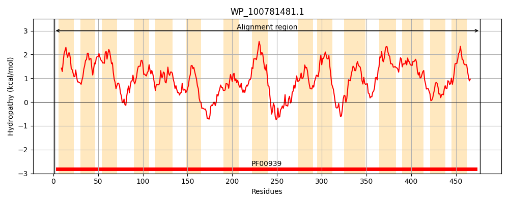
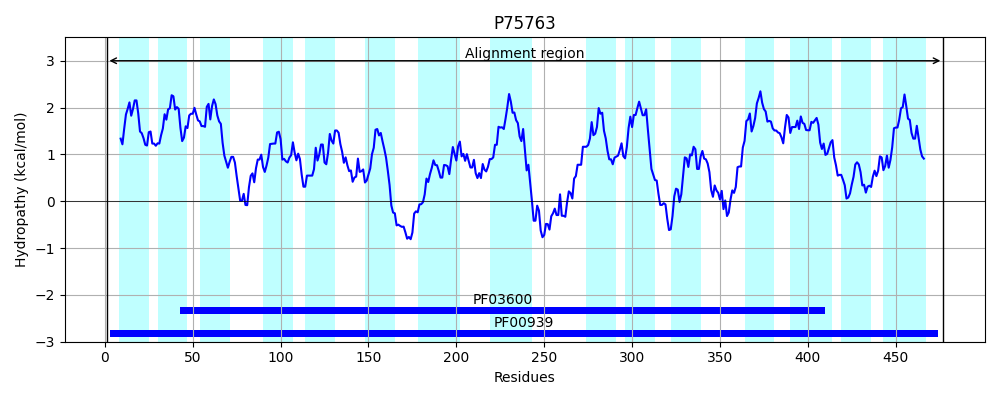
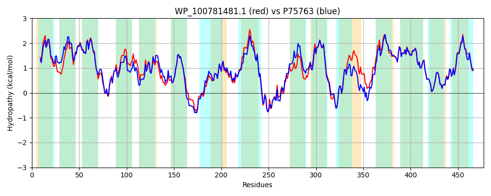

Hit Accession: P75763
Hit TCID: 2.A.47.3.5
Hit Description: gnl|BL_ORD_ID|11403 gnl|TC-DB|P75763|2.A.47.3.5 Inner membrane protein YbhI OS=Escherichia coli (strain K12) GN=ybhI PE=1 SV=1
Mach Len: 477
e:0.000000
Query TMS Count : 15
Hit TMS Count: 15
TMS-Overlap Score: 13.200000
Predicted Substrates:None
BLAST Alignment:
Score: 2008 , Bit scores: 778 bits, E-value: 0.0e+00, Alignment length: 477, Percentage identity: 79
Query: 1 MDKKSLWKLLVIIAIPILISVFPAPEGLTKLAWVLSGIYLAAIVGLVIKPFSEPVVLLIAVAASMVVIGNLGDGTIKSSSVLSGYASGTTWLVFSAFTLSAAFVITGLGKRIAYILIGKIGSTTLGLGYVTAFLDLILSPATPSNTARAGGIVLPIINSVAVALGSEPEHSAKRVGHYLMMNVYMVTKTTSYMFFTAMAGNILALKMIEDICHIKLSWGGWALAGVLPGIIILLLTPLIIYKLYPPELKKVDNKAIAKAGIESLGPMTLREKMLSCLFIMALGGWVFSKSLGVNESTVAICVMALMLVLKIVSWDDVIKNKGGWNTLIWYGGIIGLSSLLSSVGFFMWLADLLKNNISFGTHSTLAFIIIVALSILVRYFFASGSAYIVAMVPVFAMLANVSGAPVMLTALALLFSNSYGGMVTHYGGAAGPVIFGVGYNDIKSWWIVGGILALLTFILHITVGVWWWELLMYWKVI 477
M+KKSLWKL++I+AIP +I PAP GL++LAWVL GIYLAAIVGLVIKPF EPVVLLIAVAASMVV+GNL DG K+++VLSGY+SGTTWLVFSAFTLSAAFV TGLGKRIAY+LIGKIG+TTLGLGYVT FLDL+L+PATPSNTARAGGIVLPIINSVAVALGSEPE S +RVGHYLMM++YMVTKTTSYMFFTAMAGNILALKMI DI H+++SWGGWALA LPGII+LL+TPL+IY +YPPE+KKVDNK IAKAG+ LGPM +REKML +F++AL GW+FSKSLGV+ESTVAI VMA ML+L IV+W+DV+KNKGGWNTLIWYGGIIGLSSLLS V FF WLA++ KNN++F H +AF +I+ LSI+VRYFFASGSAYIVAM+PVFAMLANVSGAP+MLTALALLFSNSYGGMVTHYGGAAGPVIFGVGYNDIKSWW+VG +L +LTF++HIT+GVWWW +L+ W ++
Sbjct: 1 MNKKSLWKLILILAIPCIIGFMPAPAGLSELAWVLFGIYLAAIVGLVIKPFPEPVVLLIAVAASMVVVGNLSDGAFKTTAVLSGYSSGTTWLVFSAFTLSAAFVTTGLGKRIAYLLIGKIGNTTLGLGYVTVFLDLVLAPATPSNTARAGGIVLPIINSVAVALGSEPEKSPRRVGHYLMMSIYMVTKTTSYMFFTAMAGNILALKMINDILHLQISWGGWALAAGLPGIIMLLVTPLVIYTMYPPEIKKVDNKTIAKAGLAELGPMKIREKMLLGVFVLALLGWIFSKSLGVDESTVAIVVMATMLLLGIVTWEDVVKNKGGWNTLIWYGGIIGLSSLLSKVKFFEWLAEVFKNNLAFDGHGNVAFFVIIFLSIIVRYFFASGSAYIVAMLPVFAMLANVSGAPLMLTALALLFSNSYGGMVTHYGGAAGPVIFGVGYNDIKSWWLVGAVLTILTFLVHITLGVWWWNMLIGWNML 477 | Protein Hydropathy Plots: |
|---|
|  |  |
Pairwise Alignment-Hydropathy Plot:
|
|---|
|  |